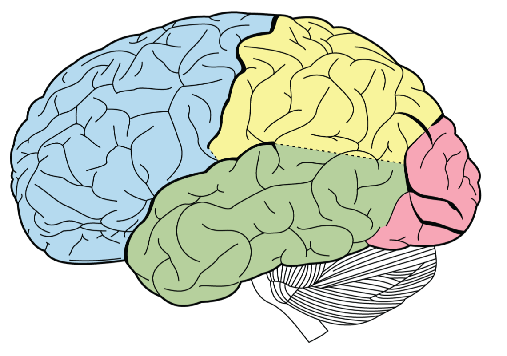

Largest division of the brain
Forebrain
The forebrain includes the cerebral cortex and deeper subcortical areas. Together, they support complex thought, perception, voluntary movement, language, emotion, learning, and memory.

Cerebral Cortex
Four major lobesFrontal Lobe
Location: Front of the cerebral cortex.
Main roles: Planning, decision-making, voluntary movement, speech production, and aspects of personality.
Real-life example: It contributes when you plan the steps needed to complete an assignment.
Parietal Lobe
Location: Upper rear portion of the cerebral cortex.
Main roles: Processes touch and body position and helps create spatial awareness.
Real-life example: It helps you identify an object in your pocket using touch alone.
Temporal Lobe
Location: Lower side of each cerebral hemisphere.
Main roles: Hearing, language comprehension, memory, and object recognition.
Real-life example: It helps you recognize a friend's voice and understand what they are saying.
Occipital Lobe
Location: Back of the cerebral cortex.
Main role: Receives and interprets visual information.
Real-life example: It helps process the shape and color of a traffic light.
Sources
OpenStax Psychology 2e — The Brain and Spinal Cord · OpenStax Anatomy and Physiology 2e — The Central Nervous System